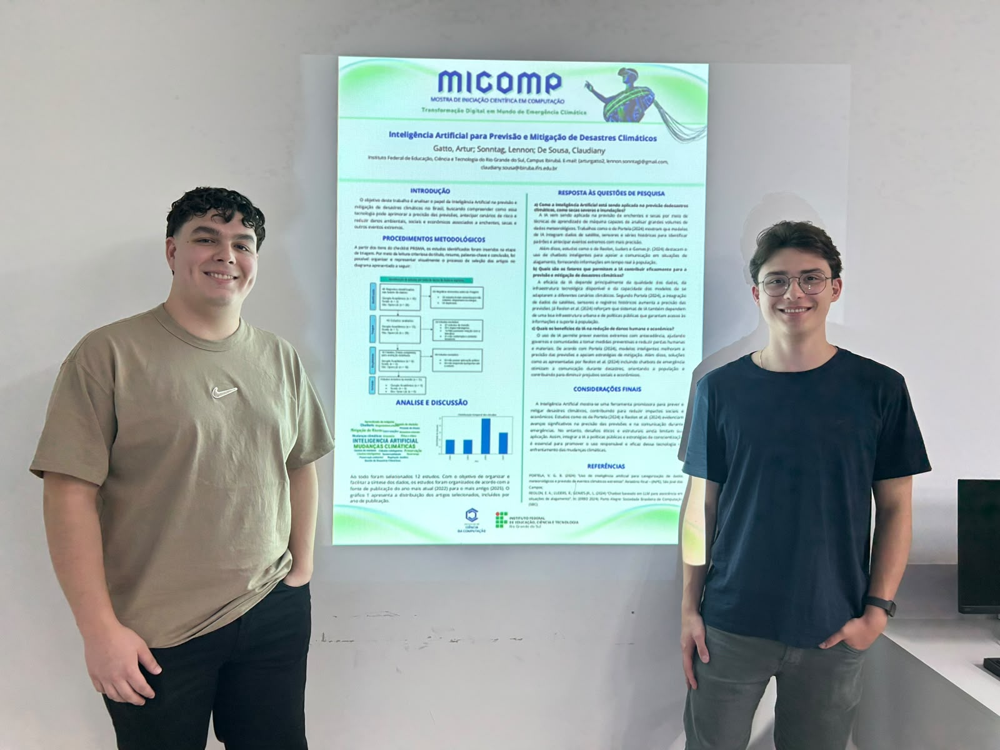
2025
Sobre a edição
A Edição de 2025 a buscou explorar como tecnologias digitais podem contribuir para compreender, monitorar e enfrentar os impactos das mudanças climáticas, ao mesmo tempo em que promove uma discussão sobre os impactos ambientais associados ao próprio desenvolvimento tecnológico. Nesse contexto, os trabalhos buscaram relacionar Computação, inovação e sustentabilidade, abordando possibilidades como Inteligência Artificial, Internet das Coisas (IoT), análise de dados, sistemas de monitoramento, automação e desenvolvimento de soluções digitais aplicadas a problemas ambientais. A edição também incentivou os estudantes a refletirem sobre o uso responsável da tecnologia e sobre o papel dos profissionais da Computação na construção de soluções mais sustentáveis, resilientes e socialmente responsáveis.
Tema da edição
"Transformação Digital em Mundo de Emergência Climática"
O tema da MICOMP 2025, “Transformação Digital em um Mundo de Emergência Climática”, está alinhado à temática proposta para o CSBC 2026. Essa aproximação busca incentivar o desenvolvimento de trabalhos com potencial de aprimoramento e posterior submissão aos eventos que integram o congresso. A temática também promove a reflexão sobre o papel da Computação diante dos desafios ambientais contemporâneos e sobre as possibilidades de aplicação das tecnologias digitais nesse contexto.
Informações
Intruções
A MICOMP constitui um espaço de iniciação científica, divulgação e socialização dos trabalhos desenvolvidos pelos estudantes na área da Computação. O evento busca estimular a aplicação do método científico, a escrita acadêmica, a comunicação científica e a reflexão ética sobre o desenvolvimento e o uso das tecnologias.
Formato dos trabalhos
Os trabalhos deverão ser escritos em português, seguindo o modelo de artigo disponibilizado pela organização da MICOMP e as orientações apresentadas na disciplina. Os artigos deverão observar as normas acadêmicas adotadas para a elaboração de trabalhos científicos, especialmente no que se refere à organização do texto, citações, referências, identificação das fontes e apresentação dos resultados. O trabalho deverá conter, no mínimo:
O trabalho deverá conter, no mínimo:
- Título;
- Identificação dos autores;
- Resumo;
- Palavras-chave;
- Introdução;
- Fundamentação teórica;
- Metodologia;
- Resultados e discussão;
- Considerações finais;
- Referências.
Os trabalhos deverão possuir entre 8 e 10 páginas, incluindo referências, tabelas, figuras e demais elementos textuais e gráficos. Os artigos deverão ser escritos em português ou inglês, seguindo o modelo para artigos publicados em anais de eventos da SBC OpenLib, disponível em https://www.sbc.org.br/documentosinstitucionais/#publicacoes. Em atendimento ao Código de Conduta para autores da SBC, “o uso de ferramentas de Inteligência Artificial (IA) Generativa na escrita e/ou revisão do conteúdo de artigos deve ser declarada explicitamente no trabalho”. As pessoas autoras devem “listar as ferramentas e descrever onde foram empregadas, por exemplo, textos, tabelas, gráficos, citações, etc. Essas ferramentas não podem ser listadas como autores de um artigo. O uso de tais ferramentas não exime os autores da responsabilidade sobre todo o seu conteúdo, inclusive no caso de ser identificado plágio”. Nas submissões ao WEI, esta declaração deve ser feita em uma seção ao final do artigo, com o título de “Declaração sobre uso de Inteligência Artificial”. Em casos de tais ferramentas não terem sido usadas, isso deve ser declarado nesta mesma seção.
Apresentação dos Trabalhos
Os trabalhos aceitos deverão ser apresentados durante a programação da
MICOMP. As apresentações têm como objetivo proporcionar aos estudantes a experiência de comunicação e divulgação científica, estimulando a capacidade de síntese, argumentação e apresentação oral. Os estudantes poderão
utilizar recursos digitais e audiovisuais para apoiar a apresentação, como slides, demonstrações de sistemas, protótipos, vídeos, imagens e outros recursos relacionados ao trabalho desenvolvido. O formato e o tempo das apresentações
serão divulgados pela Comissão Organizadora.
Ética e Integridade Acadêmica
Todos os trabalhos deverão respeitar os princípios de ética e integridade acadêmica. Não serão admitidas práticas de plágio, fabricação ou manipulação indevida de dados, apropriação de trabalhos de terceiros ou utilização de conteúdos sem a devida indicação da fonte. Os autores são responsáveis pelo conteúdo apresentado e deverão reconhecer adequadamente as contribuições intelectuais, referências, ferramentas e demais recursos utilizados durante o desenvolvimento do trabalho.Agenda
Datas Importantes
Até as 23:59
27/09/2024 - Envio da primeira versão do artigo
Recepção e entrega de materiais.
até às 20:00
29/11/2024 - Envio do Banner
Envio do banner para apresentação e feedback da primeira versão do artigo.
até às 23:59
30/11/2024 - Envio da Versão final do artigo.
Envio da versão final dos trabalhos no Moodle com as correções solicitadas.
17h00 às 20h00
13/12/2024 - Sessões Técnicas
Apresentação e debate dos trabalhos.
21h00 às 22h
12/12/2024 - Encerramento
Síntese da edição, Informativos e próximos passos.
Áreas
Tópicos de interesse
Inteligência Artificial
Desenvolvimento Web
Ciência de Dados
Internet das Coisas
Segurança da Informação
Engenharia de Software
Computação em Nuvem
Educação em Computação
Robótica
Sistemas Embarcados
Registros
Fotos do evento
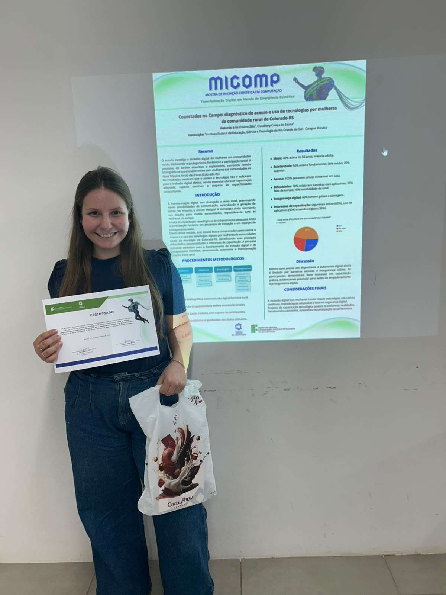
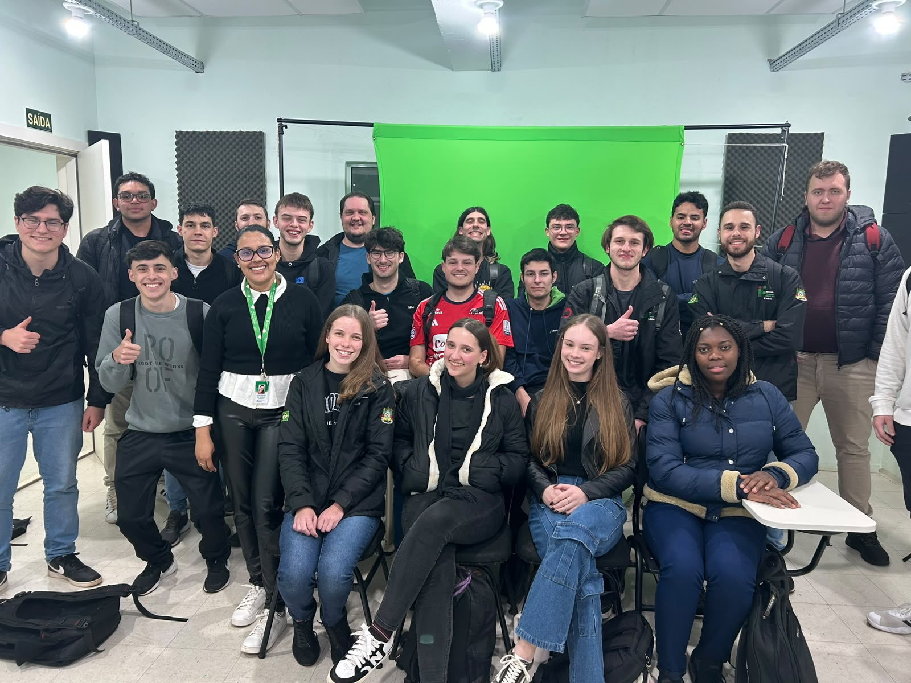
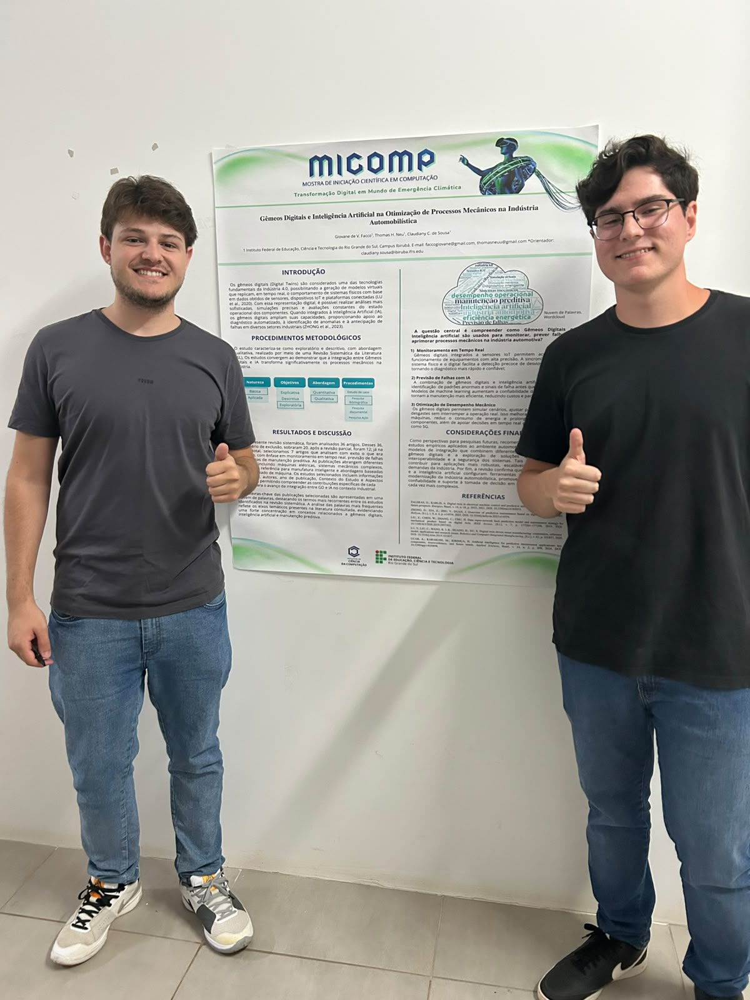
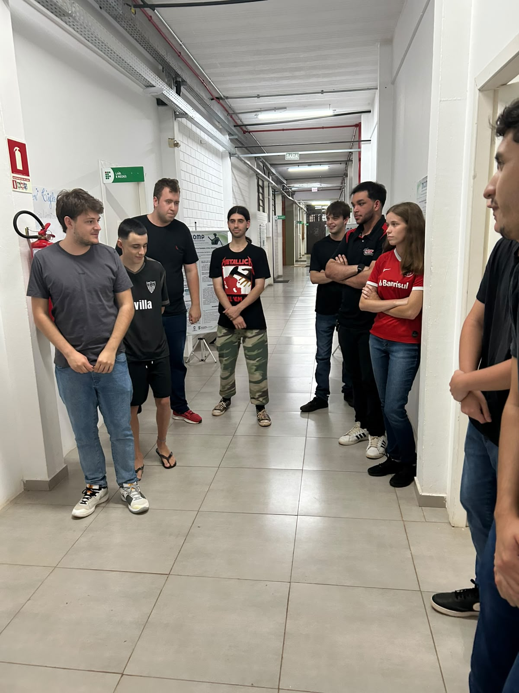
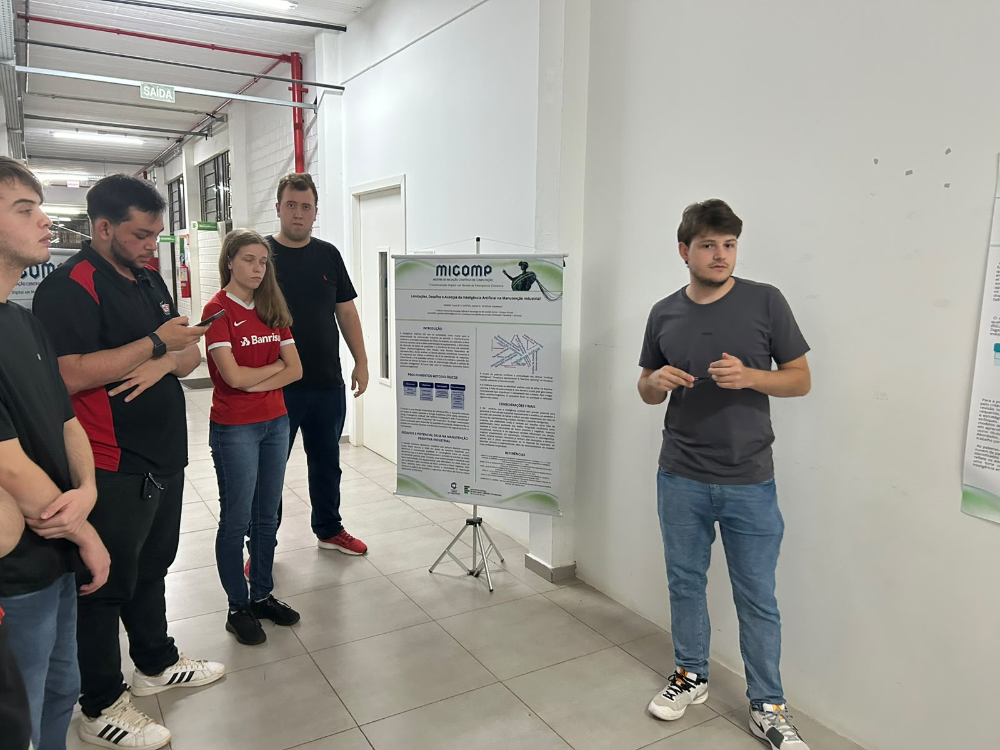
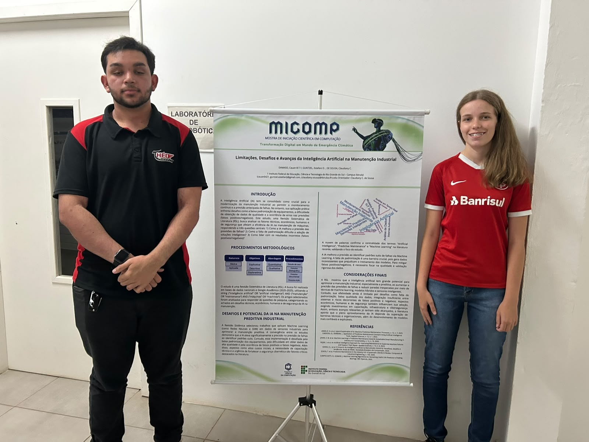
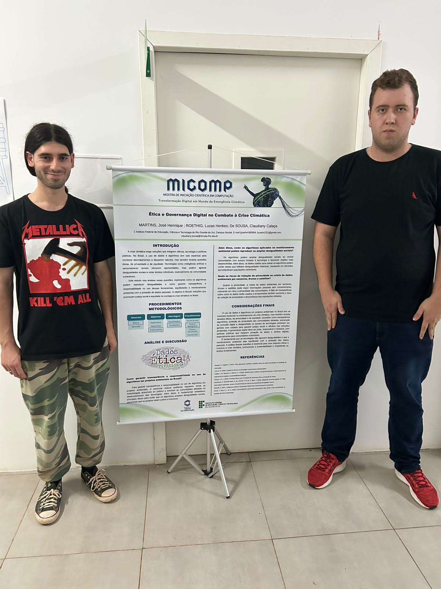
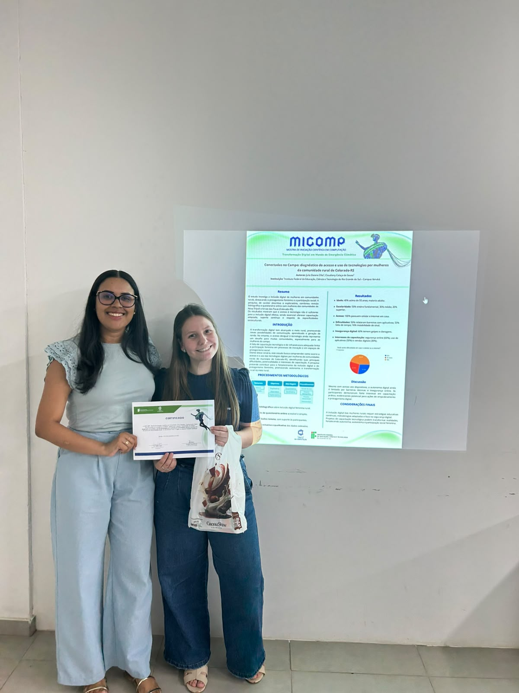
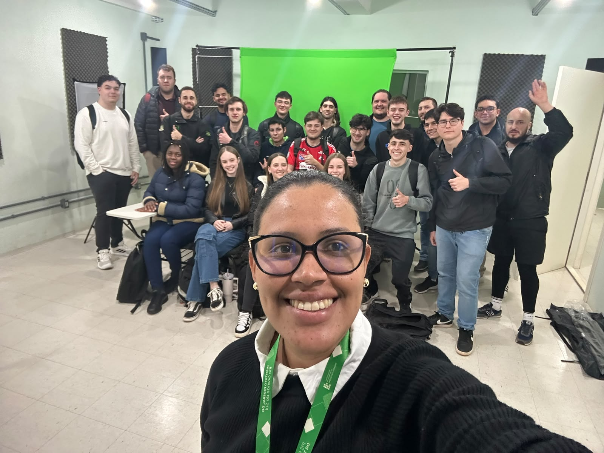
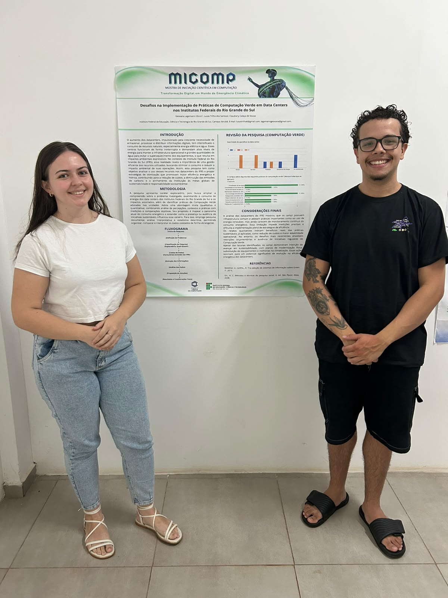
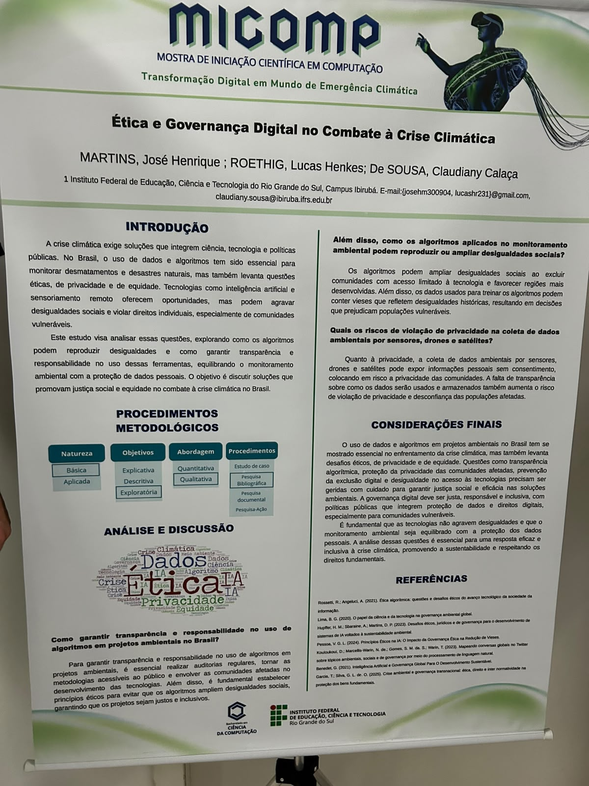
Publicação oficial
Anais MICOMP 2025
Consulte a coletânea completa de trabalhos publicados.
Produção científica
Trabalhos produzidos
| Título | Autores | Instituição | Área | |
|---|---|---|---|---|
| Arquiteturas inteligentes para ambientes educacionais | Autor(a) Exemplo; Coautor(a) | Instituição Parceira | Inteligência Artificial | |
| Aplicação web para gestão colaborativa | Autor(a) Exemplo; Coautor(a) | Instituição Parceira | Desenvolvimento Web | |
| Análise de dados aplicada à inovação | Autor(a) Exemplo; Coautor(a) | Instituição Parceira | Ciência de Dados | |
| Protótipo IoT para monitoramento sustentável | Autor(a) Exemplo; Coautor(a) | Instituição Parceira | Internet das Coisas | |
| Práticas de segurança em sistemas acadêmicos | Autor(a) Exemplo; Coautor(a) | Instituição Parceira | Segurança da Informação |